Aktuálna ponuka
Nehnuteľnosti, ktoré ponúkam
16 nehnuteľností na predaj a prenájom. Vyberte typ, alebo napíšte lokalitu.
16 z 16 ponúk
 DomNové10
259 000 €Na predaj novostavba Golianovo
Golianovo
128 m²
Diamond reality Nitra ponúka na predaj novostavbu 4 izbového nízkoenergetického bungalovu v obci Golianovo. RD je na pozemku o rozlohe 529 m2, so…
DomNové10
259 000 €Na predaj novostavba Golianovo
Golianovo
128 m²
Diamond reality Nitra ponúka na predaj novostavbu 4 izbového nízkoenergetického bungalovu v obci Golianovo. RD je na pozemku o rozlohe 529 m2, so…
 Dom10
174 000 €Investičná príležitosť!!!na predaj – dva rodinné domy na pozemku 2 624 m², Bádice
Bádice
160 m²
Ponúkame na predaj dva rodinné domy nachádzajúce sa v obci Bádice na veľkorysom pozemku o celkovej výmere 2 624 m². Nehnuteľnosť predstavuje výbornú…
Dom10
174 000 €Investičná príležitosť!!!na predaj – dva rodinné domy na pozemku 2 624 m², Bádice
Bádice
160 m²
Ponúkame na predaj dva rodinné domy nachádzajúce sa v obci Bádice na veľkorysom pozemku o celkovej výmere 2 624 m². Nehnuteľnosť predstavuje výbornú…
 Dom8
89 000 €NA PREDAJ rodinný dom v malebnej obci Bádice za lákavú cenu
Bádice
160 m²
Ponúkame na predaj rodinný dom nachádzajúci sa v obci Bádice na pozemku o celkovej výmere 624 m². Nehnuteľnosť predstavuje výbornú príležitosť pre…
Dom8
89 000 €NA PREDAJ rodinný dom v malebnej obci Bádice za lákavú cenu
Bádice
160 m²
Ponúkame na predaj rodinný dom nachádzajúci sa v obci Bádice na pozemku o celkovej výmere 624 m². Nehnuteľnosť predstavuje výbornú príležitosť pre…
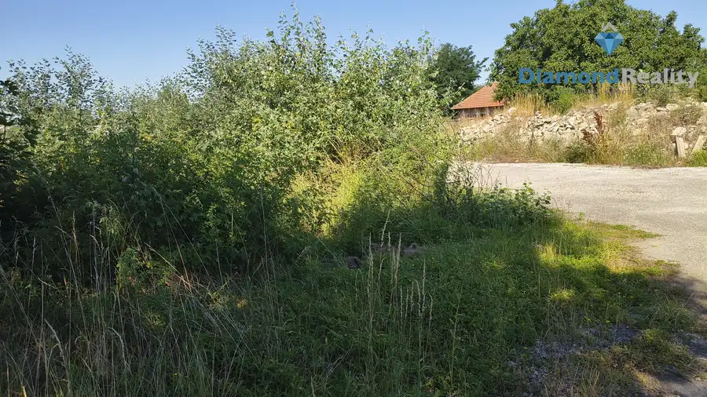
Pozemok3 64 000 €Investičná príležitosť v obci Čechynce – pozemok s potenciálom pre IBV Čechynce Diamond Reality Nitra, s.r.o. Vám exkluzívne ponúka na predaj atraktívny stavebný pozemok v obci Čechynce, vzdialenej len pár minút od Nitry. Pozemok…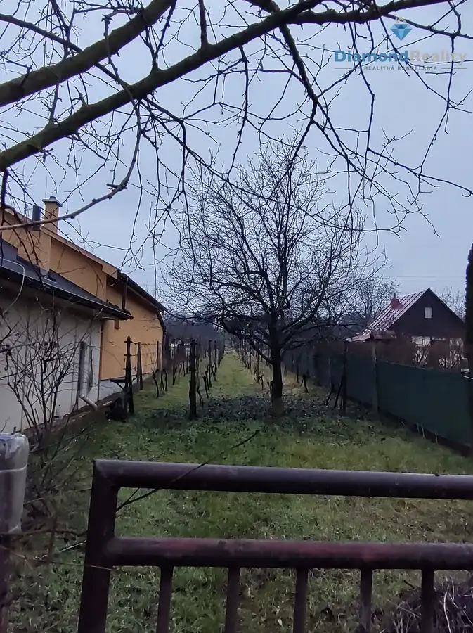
Pozemok 52 500 €Na predaj pozemok na výstavbu viničného domu alebo na bývanie Branč 549 m² Ponúkame na predaj pozemok o výmere 549 m2 vhodný na viničný domček alebo na bývanie. Inžinierske siete: voda, plyn, kanalizácia, elektrina v dosahu…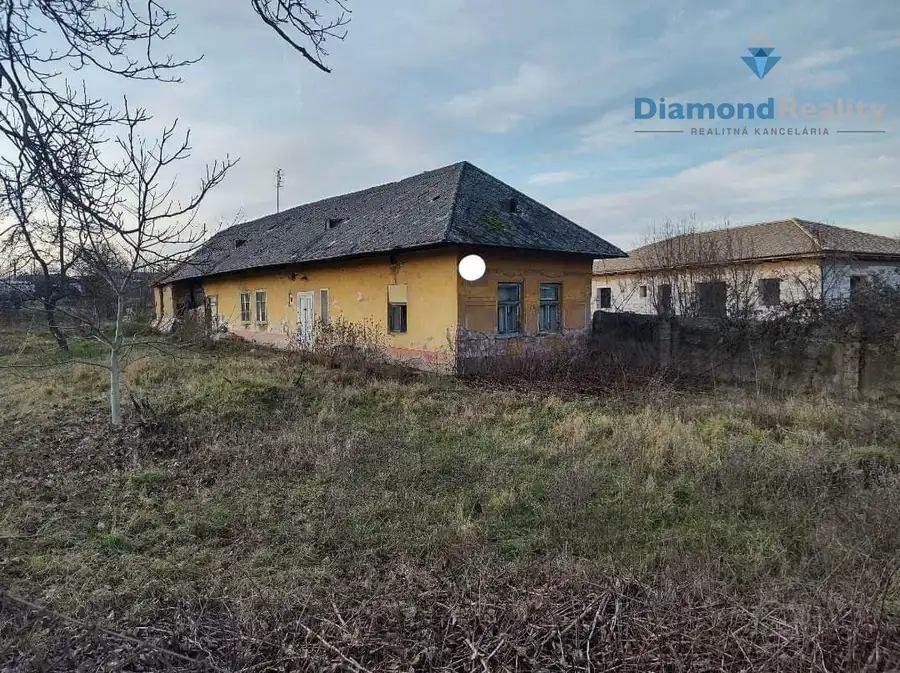
Pozemok2 45 000 €Na predaj stavebný pozemok Veľký Ďur - Rohožnica Veľký Ďur Ponúkame na predaj pozemok vhodný na výstavbu rodinného domu v obci Veľký Ďur - Rohožnica. Plocha pozemku: 1355 m2. Šírka pozemku: 25m. Po celej…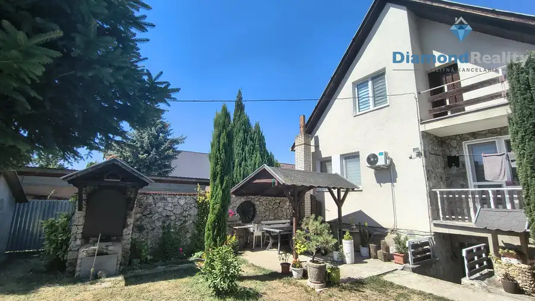
Dom10 280 000 €Na predaj rodinný dom s 15 á pozemkom 6 km od centra Nitry v malebnej obci Ivanka pri Nitre Ivanka pri Nitre 375 m² Hľadáte pokojné bývanie s veľkým priestorom, ale nechcete byť ďaleko od Nitry? Tento rodinný dom v Ivanke pri Nitre ponúka príjemnú kombináciu…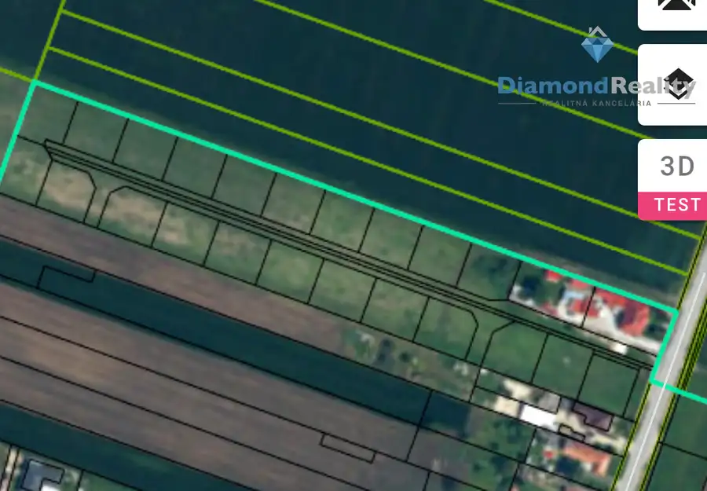
PozemokNové Cena dohodouPríležitosť pre developera!Na pedaj stavebné pozemky Branč Branč Ponúkame na predaj pozemky podľa územného plánu obce vhodné na výstavbu rodinných domov so šírkou 33 m. Inžiniersiete siete (voda, plyn, elektrina,…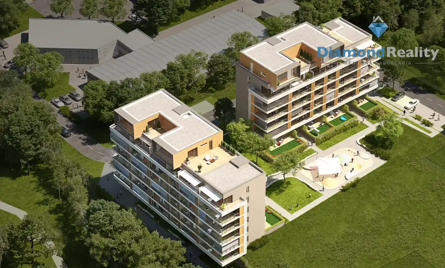
Komerčné priestory Cena dohodouPrenájom vnútorné parkovanie Brezový háj pri Promenáde Nitra 12 m² Ponúkame na prenájom vnútorné parkovacie miesto v novostavbe Brezový háj v Nitre, blízko nákupného centra Promenáda. Parkovanie je bezpečné, pohodlné…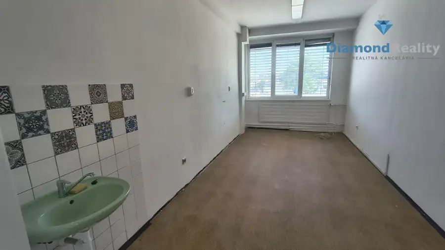
Komerčné priestory Cena dohodouNa prenájom kancelária Nitra Pražská Nitra 19 m² Ponúkame na prenájom kanceláriu nachádzajúcu sa v Nitre, na Pražskej. Výmera kancelárie 19 m2. Dámska a pánska toaleta sa nachádza na každom…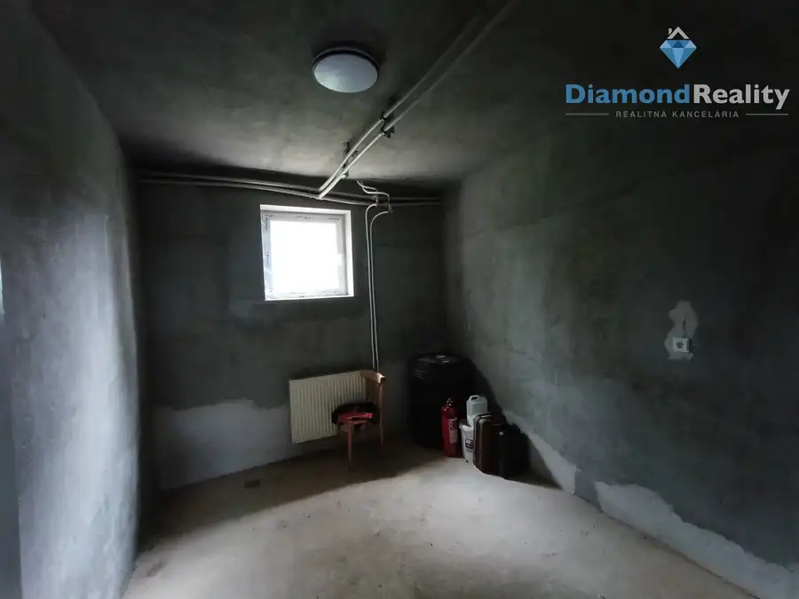
Komerčné priestory4 Cena dohodouNa prenájom objekt na podnikateľské účely, skladovanie Cabaj- Čápor Cabaj-Čápor 55 m² Ponúkame na prenájom objekt nachádzajúci sa v obci Cabaj - Čápor. Objekt je vhodný na skladové účely, podnikateľské účely.Cena 1 euro za m2.Pri…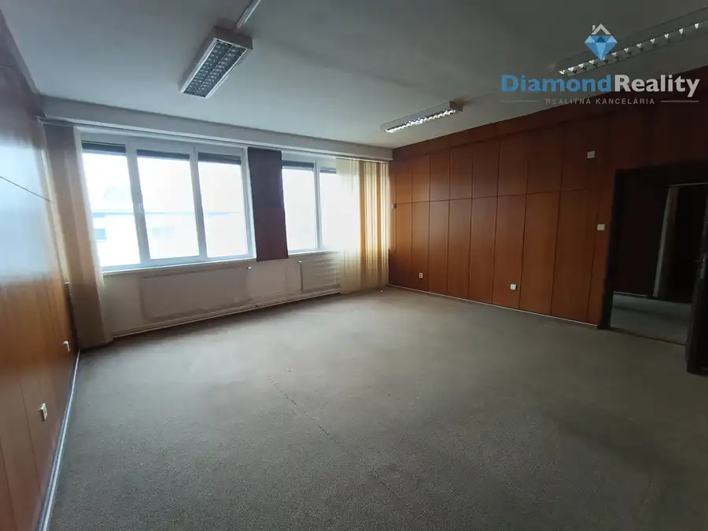
Komerčné priestory10 Cena dohodouNa prenájom dvojkancelária Nitra - Mlynárce Nitra 53 m² Ponúkame na prenájom priestrannú dvojkanceláriu nachádzajúcu sa v Nitre., Pražská ulica na 1. poschodí. Výmera kancelárie 53,33 m2. Dámska a pánska…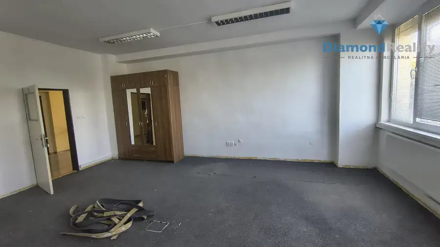
Komerčné priestory2 Cena dohodouNa prenájom kancelária Nitra Pražská Nitra 39 m² Ponúkame na prenájom kanceláriu nachádzajúcu sa v Nitre, na Pražskej. Výmera kancelárie 39 m2. Dámska a pánska toaleta sa nachádza na každom… Dom10
Cena dohodouNa predaj rodinný dom s 15 árovým pozemkom 10 minút od centra Nitry v malebnej obci Ivánka pri Nitre
Ivanka pri Nitre
375 m²
Hľadáte pokojné bývanie s veľkým priestorom, ale nechcete byť ďaleko od Nitry? Tento rodinný dom v Ivanke pri Nitre ponúka príjemnú kombináciu…
Dom10
Cena dohodouNa predaj rodinný dom s 15 árovým pozemkom 10 minút od centra Nitry v malebnej obci Ivánka pri Nitre
Ivanka pri Nitre
375 m²
Hľadáte pokojné bývanie s veľkým priestorom, ale nechcete byť ďaleko od Nitry? Tento rodinný dom v Ivanke pri Nitre ponúka príjemnú kombináciu…
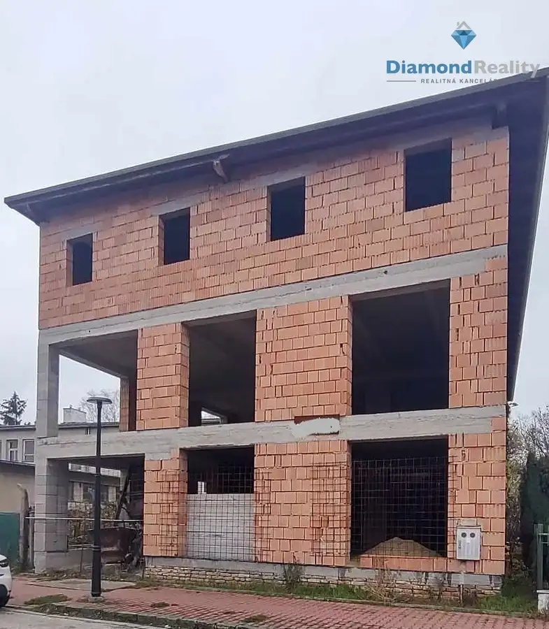
Komerčné priestoryNové 350 000 €Na predaj investičná budova Vráble Vráble 1000 m² Ponúkame na predaj zaujímavú investičnú budovu. Ide o polyfunkčnú budovu nachádzajúcu sa priamo vo Vrábľoch, kde je naplánovaných osem 75 m2 bytov.…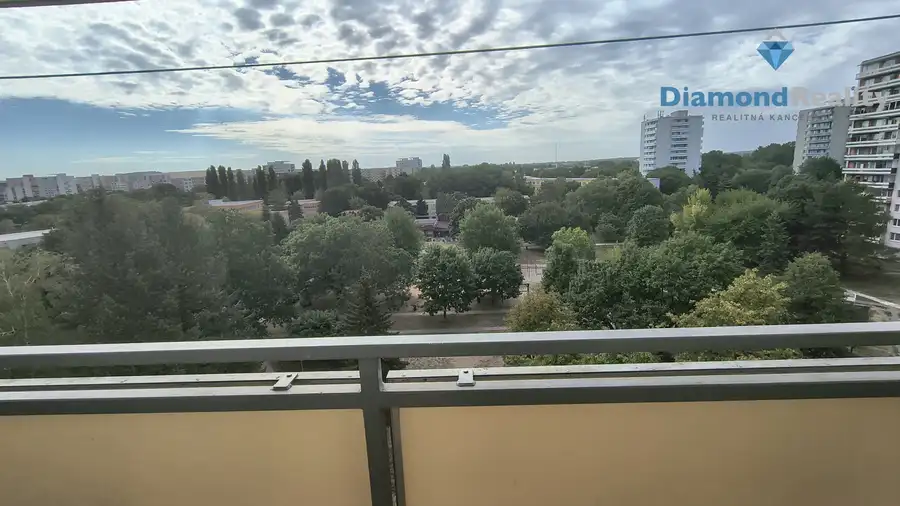
BytRezervované10 151 500 €Super cena!Na predaj 2,5 izbový byt s balkónom v obľúbenej lokalite Nitra – Chrenová, pri N-centre Nitra 2-izbový56 m² Spoločnosť Diamond Reality Nitra ponúka na predaj 2,5-izbový byt v pôvodnom stave vo vyhľadávanej lokalite Nitra – Chrenová, len pár krokov od…Tomuto výberu zatiaľ nezodpovedá žiadna ponuka. Napíšte mi, čo hľadáte.